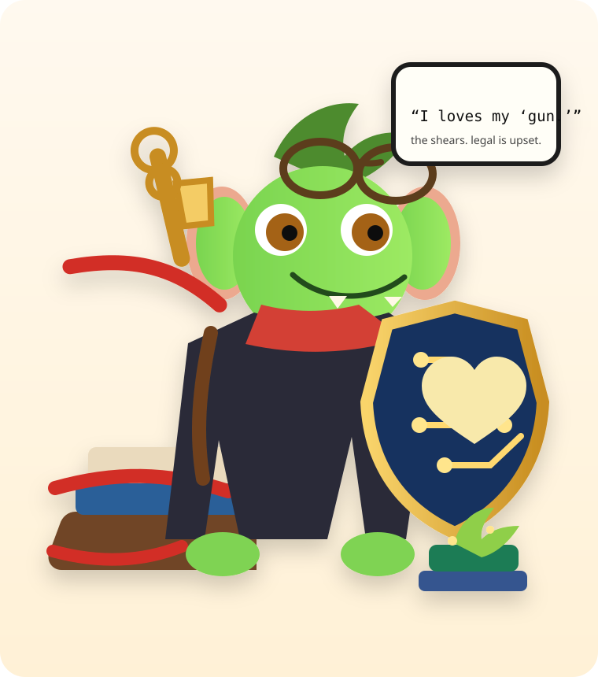

Scissors
Obsolete ceremony, implementation fossils, legacy process, and checks whose only assertion is “the implementation did not change.”

Preserve invariants. Liberate implementation.
Meet Snip, the red-tape goblin. He cuts tests, contracts, schemas, validators, docs, workflows, and process machinery when they fossilize implementation — while keeping a shield over the guarantees real users and consumers actually depend on.
Cut ceremonyKeep invariantsPrefer diagnostics over dogmaObsolete ceremony, implementation fossils, legacy process, and checks whose only assertion is “the implementation did not change.”
Observable behavior, costly regressions, public boundaries, persisted compatibility, and anything a real consumer genuinely requires.
Freedom recovered should make the repository easier to evolve next week — not merely produce a cleaner diff today.
Use $governance-reduction-pass on this PR. Apply the pass, verify it, and rewrite the PR body around the resulting system.
./install.sh --dry-run ./install.sh
Hermes and portable Agent Skills copies are installed and verified by default.
There is intentionally no internal constitution, schema graph, generated manifest, snapshot suite, or second validator here. Nothing in this package consumes one.